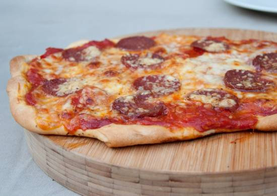

Recept voor pizza
Wat is een pizza?
De oorsprong van pizza light in het middelands zeegebied.
Daar werden al duizenden jaren geleden ronde broden gegeten. Die dienden als borden.
De bodem bestaat uit deeg, daarop word vaak, mozzarella, tomatensaus, vlees en veel meer op gelegd.
Voor het recept dat wij gaan maken hebben we nodig:
- 500 gram bloem
- 250ml water
- 25 gram verse gist
- 3 eetlepels olijfolie
- 3 theelepels zout
- 1 theelepel suiker
- tomaten puree
Als we alle ingrediënten hebben, kunnen we beginnen met de pizza's te bereiden voor de oven. Hiervoor hebben we dit stappenplan.
- Verwarm de oven tot hoogst mogelijke graden. Hoe hoger, hoe sneller de pizza klaar zal zijn.
- Giet het warme water in een bak en voeg daar aan toe de gist en de suiker. Roer dit goed door tot het egaal is.
- Maar doormiddel van bloem en water een deegbal en kneed totdat het een ronde, soepele bal is.
Voeg eventueel zout toe om de deeg opsmaak te brengen.
- Maak een tomatensaus voor een pizza of koop gewoon tomaten puree
- Nadat de deegbal een beetje gerezen is, maak je de onderkant van de pizza zo dun mogelijk en de randen lekker dik.
Zo loopt de saus er niet vanaf.
- Bedek de pizza met de tomatensaus en voeg de plakken mozzarella toe(goed uitgelegd).
Voeg alle ingrediënten naar smaak toe zoals: champignon, olijven, salami, en zoveel meer.
- Doe de pizza in de oven en wacht tot die gebakken is. De tijd zal hier in verschillen want dat ligt aan de temperatuur.

Gebruikte bron: Smulweb.nl